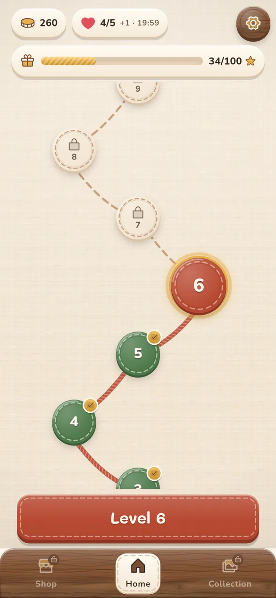
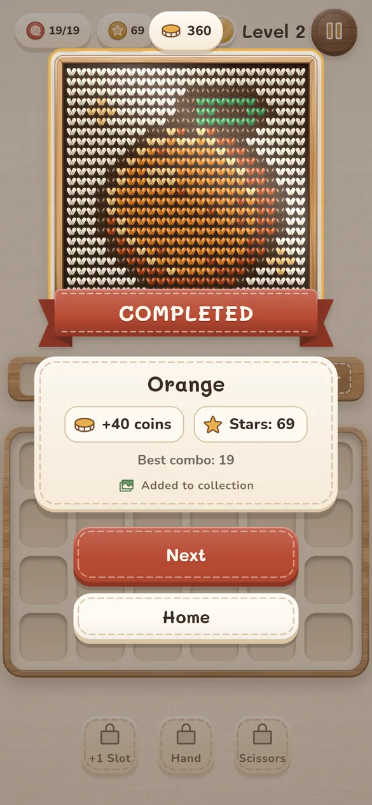
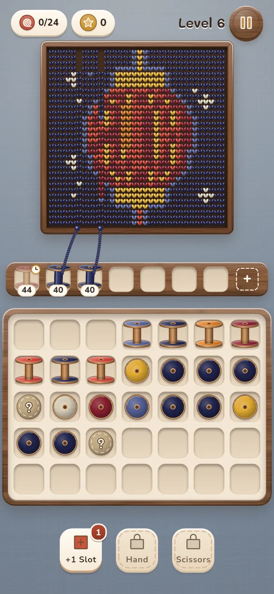

Unravel the yarn,
stitch the picture.
A calm few-minute break with no ads to sit through. Tap a spool and watch the thread stitch itself into cosy knitted pictures with a Vietnamese touch: conical hats, lotus flowers, Hội An lanterns and 117 more.
- Free
- 120 levels
- Plays offline
- No ads
- No account
Easy to learn, hard to put down
Each level takes a few minutes, and no tap is ever wasted.
Tap a spool
Pick any standing spool on the board to send it up to the wooden tray.
Watch it stitch
Spools of the right colour pull their thread into the picture. Chain stitches for combos and stars.
Keep the tray free
The tray has only a few slots. Think one step ahead and finish the picture.
A cosy knitting workshop in your pocket
Linen, oak and soft wool, all drawn by hand.



What's inside
A gently rising challenge, with relaxing breather levels along the way.
120 knitted pictures
From hearts and oranges to sailboats and Hội An lanterns, every level adds a picture to your collection.
Special spools
Mystery spools, frozen spools, roped pairs and dispensers keep every level fresh.
Handy boosters
+1 Slot adds a tray slot, Hand grabs any spool, Scissors send a spool back to the board.
The yarn shop
Spend the coins you earn on boosters, a daily deal, walnut and cherry wood sets and new backdrops.
Play anywhere
Fully offline. Play on a plane, on the train or before bed.
Colour-blind mode
Switch it on in settings and every yarn colour carries its own symbol.
Fair by design
- Every level can be beaten without paying.
- No ads and no pop-ups pushing you to buy.
- No data collected. Your progress stays on your iPhone.
Optional coin packs
Each win earns 40 coins. If you'd like a head start, the game sells optional coin packs as in-app purchases:
Frequently asked questions
Is the game free?
Yes. All 120 levels are free to download and play. Coin packs are optional.
Do I need an internet connection?
No. The game runs fully offline; only buying a coin pack needs a connection so the App Store can process it.
Where is my progress saved?
Only on your device. Deleting the app also deletes your progress.
I bought coins but didn't get them?
Reopen the game while online; the purchase is credited automatically and never twice. Still missing? See the Support page.
Which devices are supported?
iPhone with iOS 15 or later.